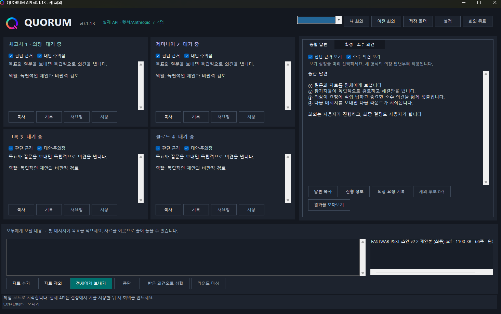

내가 원하던 모습을 거의 갖춘 쿼럼
이젠 AI 4명을 넘어 6명까지 품다
· v0.1.9–v0.1.13쿼럼은 여러 AI에게 같은 문제를 보여주고, 각자의 의견을 모아 하나의 답을 만드는 프로그램이다. 처음에는 네 명의 AI가 모여 회의하는 모습을 생각했다. 이제는 최대 여섯 명까지 참가할 수 있다.
하지만 참가자 수만 늘린다고 좋은 회의실이 되는 것은 아니다. 의견을 쉽게 읽고, 필요한 자료를 함께 살펴보고, 결과를 다시 꺼내 쓸 수 있어야 한다. v0.1.8 이후에는 그런 부분을 다듬는 데 집중했다.
여섯 명이 모이되, 일하는 순서는 조절한다
여섯 명이 회의에 참여한다고 해서 반드시 여섯 명 모두가 동시에 답변을 써야 하는 것은 아니다.
학교에서 여섯 명이 한 모둠을 이뤘다고 생각하면 쉽다. 모둠원은 여섯 명이지만, 일을 한 번에 모두 시작할 수도 있고 몇 명씩 나눠서 할 수도 있다.
v0.1.10에서는 한꺼번에 답변을 작성할 AI의 수를 조절하고, 지금 몇 명이 작업 중인지 볼 수 있도록 했다. 회의에 참여하는 수와 동시에 일하는 수를 구분한 것이다.
여기에는 API가 사용된다. API는 쿼럼 같은 프로그램이 외부 AI 서비스에 질문을 보내고 답변을 받는 연결 통로다. 참가자 수를 늘리는 것과 이 통로로 요청을 몇 개씩 보낼지는 서로 다른 문제다.
AI가 많아져도 답변은 읽기 편하게
참가자가 늘어나면 한 가지 고민도 생긴다. 여섯 명이 긴 답변을 내놓으면 그것을 읽고 정리하는 일 역시 만만치 않다.
그래서 참가자별 답변을 구분해 보고, 필요한 부분을 골라 저장할 수 있도록 손봤다. 화면에서 읽고 싶은 부분만 선택할 수 있지만, 그 때문에 나머지 원문이 사라지는 것은 아니다. 의장이 의견을 취합할 때는 참가자들의 전체 답변을 참고하도록 했다.
읽을 때는 필요한 부분을 편하게 보고, 종합할 때는 중요한 내용이 빠지지 않도록 한 것이다.
새로운 AI 모델도 목록에 추가했다. v0.1.9에서는 gpt-6.1-sol을 기본 모델 목록에 넣었다. 이때 기존에 설정해 둔 모델과 키를 보존하고, 사용자가 나중에 지운 모델을 다시 강제로 넣지 않도록 했다.
다만 목록에 이름이 추가된 것과 실제로 그 모델을 호출해 답변을 받은 것은 다르다. 해당 버전에서는 실제 API 요청을 보내지 않았기 때문에, 사용 가능 여부와 품질, 비용은 별도로 확인해야 한다.
PDF를 회의실에 올리다
이번에 크게 달라진 부분 중 하나는 PDF다. PDF는 보고서나 기획서처럼 여러 쪽으로 된 문서를 다른 기기에서도 비슷한 모양으로 볼 수 있도록 만든 파일 형식이다.
v0.1.11부터 쿼럼에 PDF를 첨부하고, 쪽별 글을 추출하거나 각 쪽을 이미지로 바꿀 수 있게 했다. 여러 AI가 같은 자료를 검토할 때 긴 문서를 직접 나눠 넣는 수고를 줄이기 위한 변화다.
이후에는 모델에 따라 자료를 전달하는 방식도 나눴다. 원본 PDF를 받을 수 있는 경로에는 파일 그대로 보내고, 변환이 필요한 경우에는 글이나 이미지로 바꿔 전달한다. 화면에서 어떤 방식으로 전달하는지도 볼 수 있도록 했다.
그록의 PDF 요청에는 답변을 조금씩 받아오는 처리도 적용했다. 이를 스트리밍이라고 한다. 답변 전체가 완성될 때까지 기다렸다가 한꺼번에 받는 대신, 도착하는 내용을 순서대로 받는 방식이다. 답변이 끝까지 완료됐는지, 중간에 끊겼는지도 구분하도록 했다.
회의 결과도 PDF로 남긴다
PDF는 자료를 넣을 때만 쓰이지 않는다. 회의 결과를 한글 PDF로 저장하는 기능도 추가했다. 제목과 표, 코드, 줄바꿈, 페이지 번호 같은 기본적인 문서 구성도 다룬다.
기획서를 올리고, 여러 AI의 의견을 살펴본 다음, 의장의 종합 답변을 문서로 남긴다. 쿼럼 안에서 보고 끝나는 회의가 아니라, 결과를 다시 꺼내 사용할 수 있는 작업으로 이어지도록 한 것이다.
넓어진 가능성과 아직 확인할 부분
v0.1.13에서는 Astra, DeepSeek, Kimi, Qwen에도 원본 PDF를 전달하는 경로를 추가했다. 다만 이것은 프로그램에 전달 경로를 마련했다는 뜻이다. 해당 모델들이 실제 서비스에서 PDF를 모두 정상적으로 읽고 답하는지까지 확인됐다는 뜻은 아니다.
자동 검사도 계속 늘렸다. 자동 검사는 프로그램의 표시나 저장, 요청 과정 등이 예상대로 움직이는지 확인하는 데 도움이 된다. 하지만 그것만으로 실제 AI 서비스에 자료를 보냈을 때의 답변 품질까지 보증할 수는 없다. 그 부분은 실제 사용을 통해 따로 확인해야 한다.
이번에 남긴 v0.1.13 화면에는 네 명의 AI와 66쪽짜리 PDF가 보인다. 참가자들은 아직 대기 중이다. 긴 자료를 올리고 회의를 준비한 화면이지, 네 AI가 분석을 마쳤다는 뜻은 아니다.

내가 원하던 모습에 가까워지다
최대 여섯 명의 AI를 구성하고, 한 번에 일할 수를 조절한다. 참가자별 의견을 나눠 보고, PDF 자료를 올리고, 회의 결과를 다시 PDF로 남긴다.
처음 머릿속에 있던 회의실이 조금씩 실제 작업 공간의 모습을 갖춰 가고 있다. 물론 앞으로도 확인할 것은 많다. 모델마다 자료가 제대로 전달되는지, 긴 답변이 끝까지 도착하는지, 결과가 실제 작업에 얼마나 도움이 되는지 계속 살펴봐야 한다.
그래서 아직 완성이라고 말하기보다는, 내가 원하던 모습을 거의 갖춰 가고 있다고 말하고 싶다.
기능을 하나씩 더하는 것에서 끝나지 않고, 여러 AI와 함께 생각하고 실제 결과물까지 만들어 내는 쿼럼으로 계속 다듬어 갈 것이다.